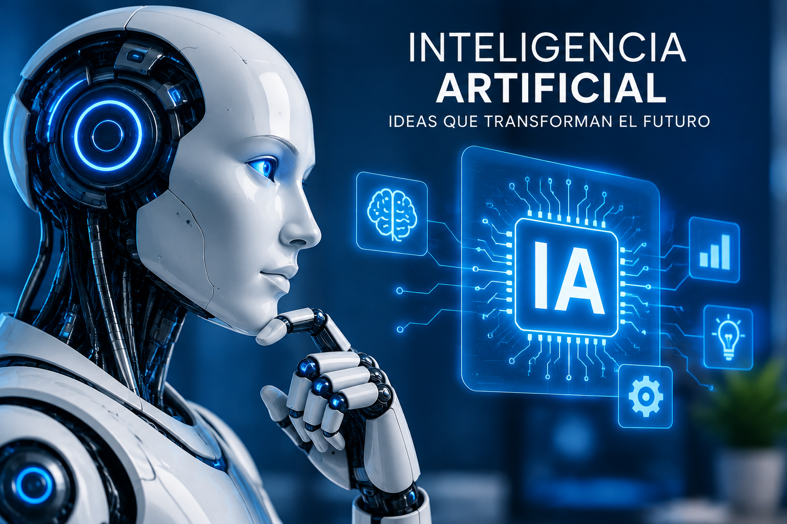
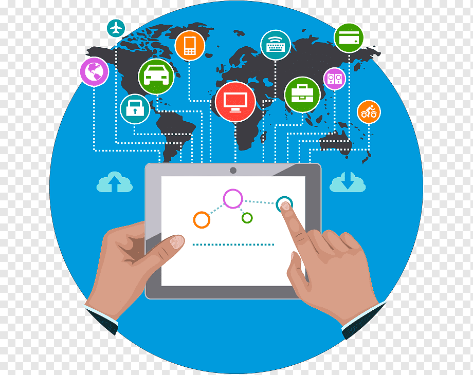
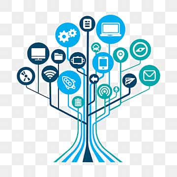
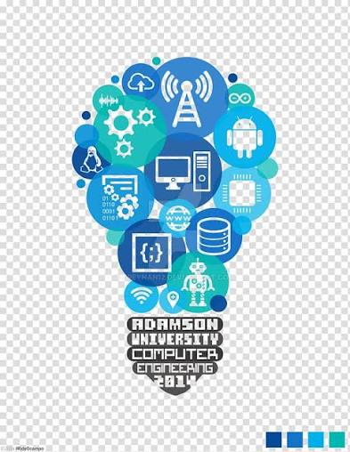

VISION
Somos una empresa lider en soluciones tecnologicas innovadoras, bridando herramientas digitales que mejoren la vida de las personas y organizaciones.
MISION

Ofrecemos servicios tecnologicos de calidad mediante el uso de inteligencia artificial, redes, software y nuevas tecnologias, con responsabilidad y compromiso
TRABAJO COOPERATIVO
Promovemos el trabajo en equipo, la comunicacion y la colaboracion para desarrollar soluciones eficientes, compartiendo conocimiento y logrando compromiso
Inteligencia Artificial

La inteligencia artificial (IA) es un campo de la informática orientado a crear sistemas y programas capaces de realizar tareas que normalmente requieren de la inteligencia humana.
Tecnologia Portatil
La tecnología portátil (también conocida como wearables) agrupa a todos los dispositivos electrónicos que se incorporan en la ropa o se usan sobre el cuerpo como accesorios cotidianos.
Redes y conectividad

Redes y conectividad es el campo de la tecnología que abarca la infraestructura, los dispositivos y los protocolos que permiten a las computadoras y sistemas comunicarse entre sí.
Ciberseguridad
La ciberseguridad es la práctica de proteger sistemas, redes, programas, dispositivos y datos de ataques digitales, accesos no autorizados o daños.
Desarrollo Web
El desarrollo web es el proceso de crear, construir y mantener sitios y aplicaciones que funcionan en internet, transformando diseños en páginas interactivas.
Noticias

Una noticia es el relato objetivo de un acontecimiento reciente y de interés público que se difunde a través de los medios de comunicación.
Galería de Fotos



